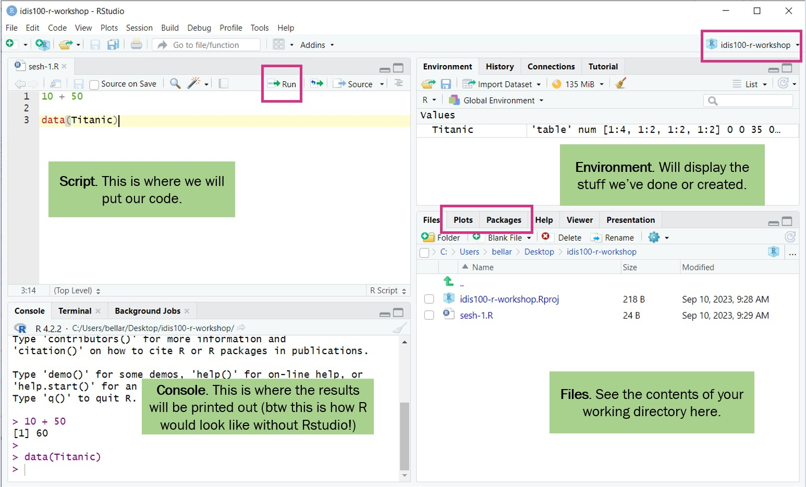

Introduction to R and RStudio
Welcome!
Preamble
About me:
Librarian, Research & Data Services team, SMU Libraries.
Bachelor of IT, MSc in Info Studies.
Have been with SMU since the pandemic era (2021).
About this workshop:
Live-coding format; code along with me!
Goal of workshop: to give you enough fundamentals (at least to the point that ChatGPT can’t bluff you so easily) and confidence to explore R on your own.
Don’t be afraid to ask for help! We are all here to learn
What is R? What is R Studio?
R: The programming language and the software that interprets the R script
RStudio: An IDE (Integrated Development Environment) that we use to interact more easily with R language and scripts.
You will need to install both for this workshop. Go to https://posit.co/download/rstudio-desktop to download and install both if you have not done so.
7 Reasons to learn R
R is free, open-source, and cross-platform.
R does not involve lots of pointing and clicking - you don’t have to remember a complicated sequence of clicks to re-run your analysis.
R code is great for reproducibility - when someone else (including your future self) can obtain the same results from the same dataset and same analysis.
R is interdisciplinary and extensible
R is scalable and works on data of all shapes and sizes (though admittedly, it is not best at some scenarios and other languages such as python would be preferred.)
R produces high-quality and publication-ready graphics
R has a large and welcoming community - which means there are lots of help available!
A Tour of RStudio
R Studio layout
Working Directory
Working directory -> where R will look for files (scripts, data, etc).
By default, it will be on your Desktop
Best practice is to use R Project to organize your files and data into projects.
When using R Project, the working directory = project folder.
Creating the project for this workshop
Go to
File>New project. ChooseNew directory, thenNew projectEnter
intro-r-socscias the name for this new folder (or “directory”) and choose where you want to put this folder, e.g.DesktoporDocumentsif you are on Windows. This will be your working directory for the rest of the workshop!
Next, let’s create 3 folders inside our working directory:
data- we will save our raw data here. It’s best practice to keep the data here untouched.data-output- if we need to modify raw data, store the modified version here.fig-output- we will save all the graphics we created here!
Warning
Don’t put your R projects inside your OneDrive folder as that may cause issues sometimes.
Let’s Code!
Create a new R script - File > New File > R script.
Note: RStudio does not autosave your progress, so remember to save from time to time!
R Objects and Values
In this line of code:
"Anya Forger"is a value. This can be either a character, numeric, or boolean data type. (more on this soon)nameis the object where we store this value. This is so that we can keep this value to be used later.<-is the assignment operator to assign the value to the object.You can also use
=, but generally in R,<-is the convention.Keyboard shortcut:
Alt+-in Windows (Option+-in Mac)
Refresher: Quantitative Data Types
Non-Continuous Data
Nominal/Categorical: Non-ordered, non-numerical data, used to represent qualitative attribute.
- Example: nationality, neighborhood, employment status
Ordinal: Ordered non-numerical data.
- Example: Nutri-grade ratings, frequency of exercise (daily, weekly, bi-weekly)
Discrete: Numerical data that can only take specific value (usually integers)
- Example: Shoe size, clothing size
Binary: Nominal data with only two possible outcome
- Example: pass/fail, yes/no, survive/not survive
Continuous Data
Interval: Numerical data that can take any value within a range. It does not have a “true zero”.
- Example: Celsius scale. Temperature of 0 C does not represent absence of heat.
Ratio: Numerical data that can take any value within a range. it has a “true zero”.
- Example: Annual income. annual income of 0 represents no income.
Data Types in R
The four basic data types are characters, numeric, boolean, and integer.
Checking data type of a variable
You can use str or typeof to check the data type of an R object.
Arithmetic operations in R
You can do arithmetic operations in R, like so:
Boolean operations in R
Boolean operations in R (will be handy for later):
AND operations (all sides needs to be TRUE for the result to be TRUE)
OR operations (only one side needs to be TRUE for the result to be TRUE)
NOT operations, which is basically flipping TRUE to FALSE and vice versa
Functions in R
Functions is a block of reusable code designed to do specific task. Function take inputs (a.k.a arguments or parameters), do their thing, and then return a result. (this result can either be printed out, or saved into an object!)
Saving the result to an object:
in the example above, round is the function. 123.456 and digits = 2 are the arguments/parameters.
How do I find out more about a particular function?
You can call the help page / vignette in R by prepending ? to the function name.
E.g. if you want to find out more about the round function, you can run ?round in your R console (bottom left panel)
Packages in R
Packages are a collections of R functions, datasets, etc. Packages extend the functionality of R.
- (Closest analogy I can think of is that they’re equivalent of browser add-ons, in a way)
Popular packages:
tidyverse,caret,shiny, etc.Installation (you only need to do this once):
install.packages("package name")Loading packages (you need to run this everytime you restart RStudio):
library(package name)- let’s try to loadtidyverse!
Data Structures in R: Vectors
Basic objects in R can only contain one value. But quite often you may want to group a bunch of values together and save it in a single object.
A vector is a data structure that can do this. It is the most common and basic data structure in R. (pretty much the workhorse of R!)
chr [1:5] "IDIS110" "IDIS100" "PLE100" "PSYC111" "PSYC103"[1] "IDIS110" "IDIS100" "PLE100" "PSYC111" "PSYC103"Example of numeric vector:
Vector Manipulations: Retrieve and update items
Vector Manipulations: Retrieve items based on criteria
Let’s say we want to retrieve items that are larger than 75.
The code below will create a boolean vector called
criteriathat basically keep tracks on whether each items insidet1_gradesfulfil our condition.The condition is “value must be > 75”. e.g. if item 1 fulfils our condition, then item 1 is ‘marked’ as
TRUE. Otherwise, it will beFALSE
- This line of code applies the boolean vector
criteriatot1_grades, and only retrieve items that fulfils the condition. i.e. items whose position is marked asTRUEbycriteriavector
Shortened version of the previous code
- You can shorten the code like this too (notice that we are not creating a temporary dataframe called criteria here):
Vector Manipulations: Handling NA values
NA values indicate null values, or the absence of a value (0 is still a value!)
Summary functions like
meanneeds you to specify in the arguments how you want it to be handled.
Vector Manipulations: Adding items
Several ways to add items to a vector
1t1_grades <- c(t1_grades, 92)
2t1_grades <- c(t1_grades, 88, 95, 79)
3t1_grades <- c(82, t1_grades)
4t1_grades <- append(t1_grades, 92, after = 2) # <2>- 1
- Add a single grade to the end of the vector using c()
- 2
- Add multiple grades to the end
- 3
- Add a grade to the beginning
- 4
- Insert a grade at a specific position using append()
Vector Manipulations: Removing items
Data Structures in R: Factors
Special data structure in R to deal with categorical data.
Can be ordered (ordinal) or unordered (nominal).
May look like a normal vector at first glance, so use
str()to check.
Unordered (Nominal):
Factor w/ 5 levels "CIS","SCIS","SOA",..: 3 4 2 1 5Ordered (Ordinal):
Data Structures in R: Dataframe
De facto data structure for tabular data in R, and what we use for data processing, plotting, and statistics.
Similar to spreadsheets!
You can create it by hand like so:
Creating dataframe from two (or more) vectors
Alternatively, here is how to create one using the two vectors that we created earlier:
course_code grade
1 IDIS110 65
2 IDIS100 70
3 PLE100 80
4 PSYC111 95
5 PSYC103 77Most of the time, our dataframe will be generated by loading from external data file such as CSV, SAV, or XLSX file.
Let’s try loading one from a CSV!
Preparation: Get the CSV
What is a CSV?
A CSV (Comma-Separated Values) file is a type of file that stores data in a plain text format. Each line in the file represents a row of data, and within each row, individual pieces of data (like numbers or words) are separated by commas. This format is commonly used for storing and transferring data, especially in spreadsheets and databases.
You can open CSV files in Excel, Google Sheets, or event Notepad!
Download and save
chile_voting.csvfrom this URLSave the CSV file into your
datafolder.Check out the data dictionary/explanatory notes to learn more about the data, including the column names, data type inside each columns here.
We need to use
readrpackage, which is part oftidyversepackage. So please installtidyversefirst if you have not done so.
Loading data from CSV into a Dataframe
Load the CSV and save the content into a tibble/dataframe called chile_data
- 1
-
Load the
tidyverselibrary (make sure to have it installed first!) - 2
-
Read the CSV file that we placed inside the the data folder with the help of
read_csvfunction, and save it intochile_datadataframe. - 3
- Print the first few rows of the data to check if it’s loaded correctly.
More ways to “peek” at the data
1dim(chile_data)
2names(chile_data)
3str(chile_data)
4summary(chile_data)
5head(chile_data, n=5)
6tail(chile_data, n=5)- 1
- return a vector of number of rows and columns
- 2
- inspect columns
- 3
- inspect structure
- 4
- print the summary stats of the entire dataframe
- 5
- view the first 5 rows
- 6
- view the last 5 rows
Basic dataframe manipulations: Retrieving values
Some basic dataframe functions before we move on to data wrangling next week:
End of Session 1!
Next Session: Data wrangling with dplyr and tidyr packages